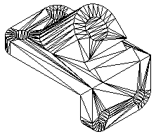

Working with .stl documents in Solid Edge
STL files only describe the surface geometry of a 3D object. They are unit-less and have no representation of color, texture or other common model attributes. STL files are commonly used for rapid prototyping, 3D printing, and computer-aided manufacturing.
Solid Edge creates meshed data when you import a STL, JT, or IFC file to Solid Edge part, sheet metal or assembly.
Opening .stl documents in Solid Edge
You can open .stl ASCII or Binary documents in Solid Edge assembly, part, or sheet metal with the Open command. On the Open File dialog box, after you select the .stl document you want to open, click the Options button to display the STL Import Options dialog box. Since .stl documents are unit-less, use this dialog box to specify the units for the document.
A .stl document contains only information about mesh bodies. If you open a .stl document containing multiple bodies in an assembly template, Solid Edge translates the multiple bodies into a single part document with a single entry in Feature PathFinder.
Importing mesh bodies
.Stl documents contain mesh bodies. A mesh body is a surface representation defined by triangles.

Rules for mesh bodies
-
When you import a .stl mesh body, it is stored in Solid Edge as a non-Parasolid body. The mesh body is displayed in Feature PathFinder as a part copy. However, since the mesh part copy is a non-Parasolid body, the rules are different than those for a normal part copy.
-
When you import a mesh body, it can be placed as a construction or as a base feature. To place the mesh body as a base feature, select the Make Base Feature option on the STL Import Options dialog box. Even placed as a base feature, it is not considered a design body since no material can be added or removed from this type of feature.
-
When you import a mesh body, all faces are merged into a single part copy and represented by a single entry in Feature PathFinder.
-
You cannot modify a mesh part copy.
-
The Insert Part Copy command does not support .stl documents.
-
You you currently cannot locate edges, or vertices of a meshed body. You can only locate the entire body and some faces, or features depending on the quality of the mesh data.
-
Commands that require faces, edges, or vertices as input will simply fail when trying to locate the faces, vertices or edges of a meshed body. For example, when drawing a sketch, the Sketch command will not locate faces, edge, and vertices of a meshed body. When the Solid Edge part file contains a mesh body, any commands that only add or removes material from the base feature are disabled.
-
Commands that calculate physical properties are supported for mesh bodies in a Solid Edge part document.
-
You can check for interference between mesh bodies in a Solid Edge assembly document.
Displaying mesh bodies
-
Meshed bodies are represented in Feature PathFinder with a unique icon and name. You can control the display mode of the mesh body in Solid Edge, as with any other design bodies. However, when the body is shaded, the edge display is never enabled. You can use the shortcut menu in either Feature PathFinder or the graphics window to show or hide the mesh body.
Healing mesh faults
You can use the Heal mesh faults option on the STL Import Options dialog box to specify that you want to repair any mesh faults when you open the STL file.
You can also use the corresponding Heal mesh faults parameter in the SESTL.ini file, which is set to off by default, to repair the mesh faults. Leaving the parameter set to off only fixes basic faults, such as degenerative facets or duplicate vertices. Setting the value to on is a time consuming operation that fixes the basic faults, along with more complex faults, such as self-intersection faults.
You can use the Minimum face number = parameter in the SESTL.ini file to filter out the number of unnecessary meshes generated after the faults are fixed. By default, the value is 100, which means any meshes with facet numbers below 100 are discarded after the faults are fixed.